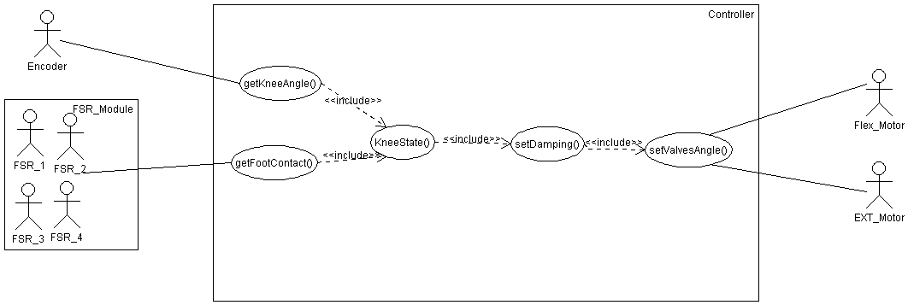
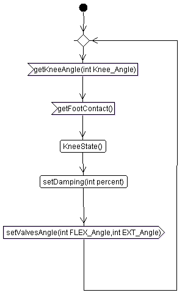
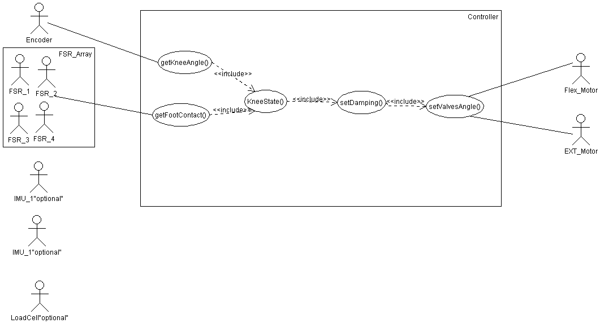
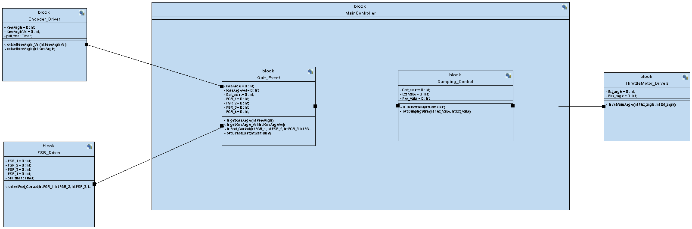
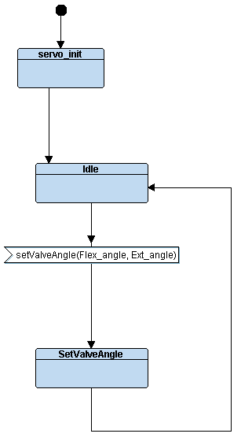
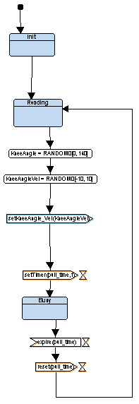
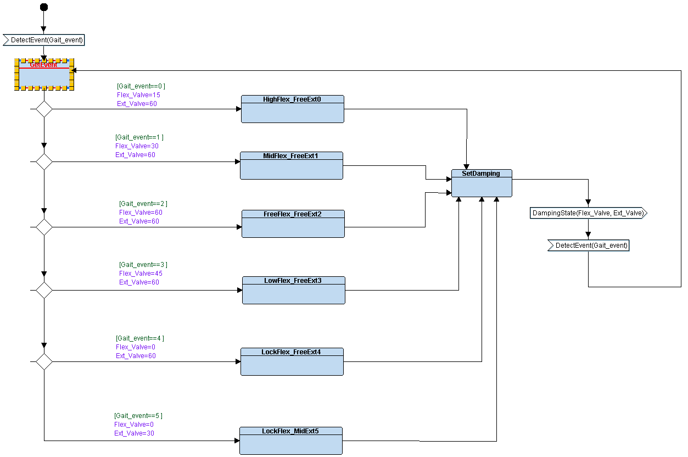

TTool project:
MPKSys.xml
Requirements
AVATARRD
Analysis
UseCaseDiagram 0

ActivityDiagram 0

MyScenario0
UseCaseDiagram 1

Design
Block Diagram

Behavior of Block: MainController

Behavior of Block: FSRDriver

Behavior of Block: ThrottleMotorDrivers

Behavior of Block: EncoderDriver

Behavior of Block: KneeState

Behavior of Block: DampingCalculation

Behavior of Block: Valves_Angle